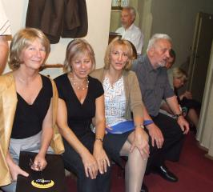

A tymczasem w Cameracie...
.
2012-09-01
Mimo paskudnej pogody, humory nam dopisują. Stoimy radośni pod kościołem i czekamy na resztę Zaczynamy rozśpiewkę w pięknej sali.
Kościół jest piękny.
Ave Maria śpiewa przepięknie Izabela Szota, nasza dyrygentka.
Po ślubie schodzimy do wspaniałej sali. Tutaj śpiewamy kilka utworów i śpiewane życzenia dla młodej pary.
Po ślubie idziemy na kawę i pogaduszki. Czas szybko mija i trzeba wracać.

© Stowarzyszenie Muzyczne Chór Camerata Wieliczka